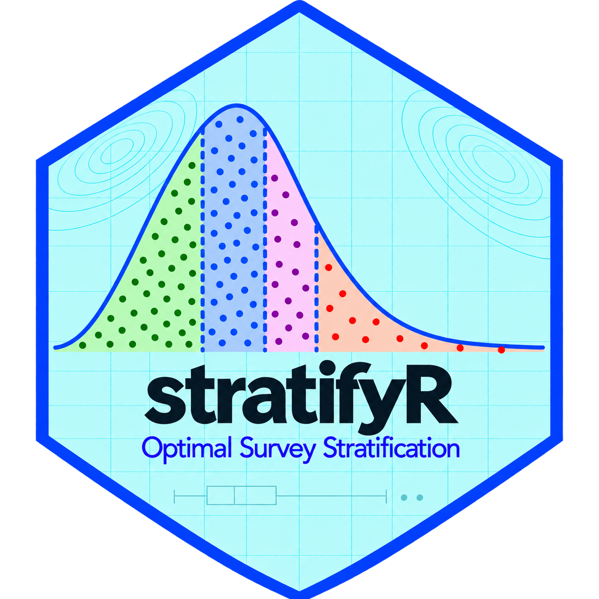

stratifyR 2.0-1
Optimal Survey Stratification in R

stratifyR 2.0-1
When your survey variable is continuous, like income, farm production, or claim size, you can cut its range into bands and sample from each band separately. The tricky part is deciding where the cuts should go, how many units to take from each band, and whether the precision gain is worth the effort.
stratifyR 2.0-1 works all of that out for you. One call gives you the optimal boundaries, the sample size per stratum, and a plain-language efficiency report.
For skewed populations, optimal stratification typically reduces variance by 30–90% at the same total sample size. The gain depends entirely on where the boundaries sit. stratifyR finds the best boundaries for your data.
Quick Start
library(stratifyR)
data(sugarcane) # 13,894 cane growers in Fiji
# 4 strata · total sample 500 · Dynamic Programming solver
res <- strata.data(sugarcane$Production, h = 4, n = 500, method = "dp")
summary(res)One call fits the best distribution, finds optimal boundaries, and allocates the sample. The summary shows one row per stratum with the boundaries, weight, variance, and allocation.
res$OSB # optimal stratum boundaries
res$nh # sample sizes per stratum
res$Wh # stratum weights
res$Vh # within-stratum variances
res$WhSh # each stratum's Neyman cost contribution
res$WhShTot # total Neyman cost (lower = better)
res$distr # fitted distribution name
res$fit # fitted distribution parametersDistribution Fitting Step
Before placing any boundaries, strata.data() automatically fits your variable’s distribution from these candidates:
Normal · Log-Normal · Gamma · Weibull · Exponential · Cauchy · Uniform · Pareto · Triangular · Right-Triangular
The fitted distribution is used by the Dynamic Programming solver to compute each stratum’s contribution exactly. This is what makes it reliable on skewed and heavy-tailed data.
Already know the distribution? Use strata.distr() to supply it directly. No data needed (see Design Without Data).
Three Solvers
⚙ Dynamic Programming
method = "dp"
Globally optimal on a fine grid. Best for heavy-tailed or skewed data. Most reliable choice when boundary accuracy matters most.
⚡ COBYLA
method = "cobyla"
Fast derivative-free solver from many starting points. Matches DP on symmetric/light-tailed data in a fraction of the time. Best for interactive use.
🌐 GLOBAL
method = "global"
Two-phase: broad global search + refinement. The safe fast choice for skewed data when DP is too slow.
dp <- strata.data(sugarcane$Production, h = 4, n = 500, method = "dp")
cob <- strata.data(sugarcane$Production, h = 4, n = 500, method = "cobyla")
glob <- strata.data(sugarcane$Production, h = 4, n = 500, method = "global")Solution Quality Diagnostics
For COBYLA and GLOBAL, check how close the solution is to optimal:
res$converged # did the solver converge?
res$optimality_gap # Cauchy-Schwarz gap: distance above the lower bound
res$kkt_residuals # first-order optimality residualsVisualising the Design
Histogram with fitted density curve and colour-coded strata shading. Immediately shows where the boundaries fall and how the data mass is split.
plot(res)Interactive plotly surface showing how the Neyman cost changes as boundaries move. Reveals that the optimum sits in a well.
plot(res, type = "3d")One slider per interior boundary. Drag it and the Neyman cost updates in real time. Good for teaching and for checking how sensitive the design is to small boundary changes.
plot(res, type = "interactive")Design Efficiency Report
cd <- compare_designs(res)
cdCompares three designs at the same sample size: Simple Random Sampling, Proportional Allocation, and Optimal Neyman Allocation. For each: variance, standard error, design effect, equivalent SRS size, and percentage saving.
The optimal stratified sample of 500 growers is as precise as a simple random sample of ~5,395 growers. That is roughly a 90% saving in sample size.
Choosing the Number of Strata
More strata always lower the Neyman cost, but gains level off quickly. Scan a range and look for the elbow:
for (H in 2:6) {
r <- strata.data(sugarcane$Production, h = H, n = 500, method = "dp")
cat("H =", H, " Neyman cost =", round(r$WhShTot, 2), "\n")
}The Shiny app does this automatically and marks the recommended stratum count on the curve.
Design Without Data
You can plan the full design before any fieldwork using an assumed distribution from a past round or pilot study:
# Household income survey: log-normal, 20,000 units, n = 1,000
g <- strata.distr(h = 4, initval = 500, dist = 119500,
distr = "lnorm",
params = c(meanlog = 9.616, sdlog = 0.703),
n = 1000, N = 20000, method = "dp")
summary(g)
compare_designs(g)
# Optimal design ~12x more efficient than SRSCost-Constrained Allocation
When sampling costs differ by stratum (large units cost more to visit):
ch <- c(20, 30, 50, 80) # cost per sampled unit, stratum 1 to 4
cost_res <- strata.data(sugarcane$Production, h = 4, n = 500,
method = "dp", cost = TRUE, ch = ch)The cost-aware design adjusts both boundaries and allocation. On the sugarcane data it is about a third cheaper to run in the field at the same total n.
Shiny App
install.packages(c("shiny", "bslib", "DT")) # once
stratifyRApp()The app covers the full workflow across eight tabs:
Design Comparison: variance, SE, design effect vs. SRS and proportional
Strata Count: Neyman cost curve with elbow recommendation
Boundary Methods: DP vs. classical boundary rules side by side
Sample Size: target precision to required sample size
Allocation: SRS / proportional / Neyman compared
Cost-Constrained: enter per-stratum costs and see the cost-aware design
Visualise: 2D density, 3D cost surface, interactive boundary explorer
What Is New in Version 2.0-1
method argument.cost = TRUE and ch arguments.compare_designs(): design-efficiency report with design effects and equivalent SRS sizes.stratifyRApp() covering the entire workflow.strata.data() and strata.distr() calls work unchanged.Who Is stratifyR For?
🏛 Statistical Offices
Business, agricultural, and household surveys where good stratification cuts the sample size (and cost) needed to hit a target precision.
📐 Survey Methodologists
An open, reproducible implementation with a globally optimal solver to benchmark against classical boundary rules.
🔬 Applied Researchers
Health, economics, agriculture, environment. Design an efficient sample at the planning stage using an assumed distribution.
🎓 Teachers & Students
The app and interactive plots show how boundaries and allocation affect an estimate, with no code needed.
Quick Reference
| Function | Purpose |
|---|---|
strata.data(x, h, n) |
Fit + optimal boundaries + allocation from data |
strata.distr(h, n, distr, params, N) |
Optimal design from assumed distribution |
compare_designs(res) |
Design efficiency vs. SRS and proportional |
plot(res) |
2D strata density plot |
plot(res, type = "3d") |
Interactive 3D Neyman cost surface |
plot(res, type = "interactive") |
Real-time boundary explorer |
stratifyRApp() |
Launch Shiny app |
summary(res) |
Full per-stratum table |
print(res) |
Console summary |
Citation
citation("stratifyR")Reddy, K. G., & Khan, M. G. M. (2026). stratifyR: Optimal Stratification of Surveys. R package version 2.0-1. https://cran.r-project.org/package=stratifyR
stratifyR is on CRAN: https://cran.r-project.org/package=stratifyR
A full software paper benchmarking the three solvers is in preparation. We would love to hear how you are using it. Get in touch or leave a comment.